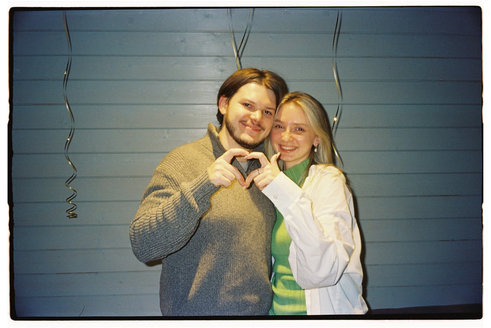
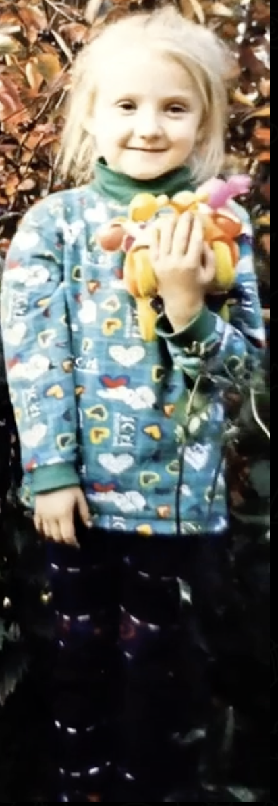
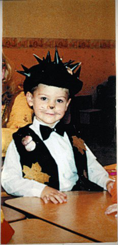

Антон & Валерия
далее
Привет! Приглашаем тебя разделить с нами трогательный момент и отпраздновать любовь.
Когда и где
11 сентября 15:00
Особняк Путилова
проспект Динамо, № 2Б

Валерия
Та, что была скромным и послушным ребёнком с добрым сердцем.
К сентябрю она пройдёт длинный путь от детских воспоминаний до свадебного платья — и ей хочется, чтобы вы были рядом в этот день.

Антон
Тот, что в четыре года выбирал самые сложные роли и умел носить бабочку с серьёзным видом.
Через много лет он найдёт ту самую — и позовёт всех вас отметить это вместе с ним.
Дресс-код,
но скорее настроение
Доска с примерами образов — на Pinterest
Подарки
Самым тёплым подарком будет ваше присутствие. Если хочется большего — две подсказки.
Лучший подарок
Если захотите порадовать нас — конверт станет лучшим подарком. Это поможет нам начать совместный путь так, как мы задумали.
Цветочная подписка
Будем рады, если вместо букета в день свадьбы вы пополните счёт нашей цветочной подписки — цветы будут приходить нам домой в течение года и продлят ощущение праздника.
На странице выберите сумму, укажите своё имя и телефон, а в поле получателя — имя и телефон невесты: Валерия, +7 916 831 68 28.
Пополнить счёт подпискиПо всем вопросам
Свяжитесь с нашими организаторами — Platina Wedding.